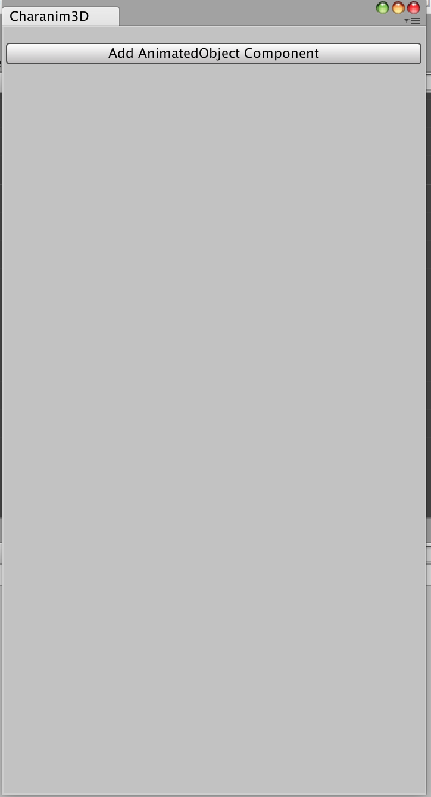

Create locomotion (walk, run) animations in 15 minutes.
Create walk animation cycle
1) Setup
In Unity3d, open the asset store by going to the menu and clicking Window -> General -> Asset Store or Window -> Asset Store or Command+9
Search for Charanim3D, install the asset.
Once the asset is installed, go to the menu and click Window -> Charanim3D

2) Add the AnimatedObject Component
In the gameobject hierarchy, select the character you wish to animate.
Click on Add AnimatedObject Component.
3) Add the bones to use for the animation
In the Charanim3D tabs, select Bones.
Click Add Mesh Bones, this will add all the bones in the skeleton.
If for some reason some bones don’t show, try clicking Add All Bones.
You can also drag individual bones, from the hierarchy to the Add bone input.
Now remove uneseccary bones, you only need the hips, head, hands, feet, and bones linking them.
You can remove bones by Clicking on Delete or Delete Children.
The more bones you have, the slower.
4) Add mirror
In the Charanim3D tabs, select Mirror.
The mirror should divide the character into 2, if not, change the Mirror Normal so it does.
Click on Add All Pairs.
5) Set head
In the Charanim3D tabs, select Head.
From the hierarchy, drag the head to the “Set head” input.
6) Add hands
In the Charanim3D tabs, select Hands.
From the hierarchy, drag a hand to the “Add hand” input.
When the mirror is used, you just need to add one hand.
Adjust the path for the hands.
7) Add foot
In the Charanim3D tabs, select Feet.
From the hierarchy, drag a foot to the Add Foot input.
When the mirror is used, you just need to add one foot.
From the non-mirrored bone, in the Colliders subsection, go to actions and click generate colliders.
You should see 4 spheres below the foot, these are the colliders.
If you don’t see them, you will have to add them manually by clicking the + button.
you only need to add 2
From the non-mirrored/paired bone, in the Foot Path sub section, go to actions and click “Generate”
You should now see a path for the foot.
8) In the Charanim3D tabs, select Bones
If the foot has any child bone, remove it.
In the hierarchy, select the non-mirrored “knee” bone, once selected, it should also be selected in the Bones page.
The “knee” is the parent of the foot.
If you did not set the mirror, you will have to do this for both knees.
Set the knee’s Constraint Type to Hinge.
You can adjust the plane of the “hinge” by clicking on Rotate Swing Axis
Alter Swing1 Limit or Swing2 Limit such that the knee can only move backwards.
In the hierarchy, select the non-mirrored “elbow” bone, once selected, it should also be selected in the Bones page.
The “elbow” is the parent of the hand
If you did not set the mirror, you have to do this for each elbow.
Set the elbow’s Constraint Type to Hinge.
You can adjust the plane of the “hinge” by clicking on Rotate Swing Axis
Alter Swing1 Limit or Swing2 Limit such that the elbow can only move forward.
9) Create animation file
In the Charanim3D tabs, select Animation.
You should see the path of your character in the scene.
Increase the length until there is no warning about path.
Scroll down, make sure the animation type is Cycle .
Make sure the scene contains collider on which the character can walk.
Address any other warning or errors.
Click on Create Animation Clip.
Voila!.
Create run animation cycle
Follow the steps for the Walk Animation
In the Charanim3D tab, select Feet.
In the Gait section, under Step parameters make sure the value of Pass is set to around 0.5f.
You can alter this value, which roughly represents the “fly” of the run.
Go back to animation and click Create Animation.
Voila!.
Create hop animation cycle
Follow the steps for the Walk Animation
In the Charanim3D tab, select “feet”.
In the Gait section, set the Step Count to one.
In the Gait section, under Step parameters make sure the value of Pass is set to around 0.1f.
You can alter this value, which roughly represents the “pass” of the hop.
Go back to animation and click Create Animation.
Voila!.
Issues
If after fixing all errors and warnings, you still get bad results, try reducing the “Frame Seperation” multiple times, (dividing by 2 each time). If that does not not fix it, contact us.
Reference
Animation Page
The root bone and its path are shown.
Gravity is just gravity.
Speed, is the speed of the character.
Frame Separation is precision if the resolver, the lower the better.
Animation Type whether the animation should be a cycle or not.
If set to Cycle, a locomotion cycle will be created.
If set to Normal, the animation will just follow the path.
Compress Animation will enable animation compression.
Compression takes more time, so you might want to do it at the end.
Straighten tangents will straighten the tangents of the output animation.
Bones Page
Add Bone allows you to add a single bone by dragging it from the hierarchy.
Add Mesh Bones will add bones from the skinned mesh renderer.
Add All Bones will add all transforms.
Delete All Bones will remove all the bones.
For each bone you have:
Delete which removes the bone.
Delete Children will remove all the children of the bone.
Game Object represents the gameobject of the bone.
Contraint Type can be set to:
Ball And Socket which is the default.
Hinge this should be the value for the knees and the elbows.
Twist axis represents the twist axis of the bone’s joint.
Twist Limits allows you to set the limits of the twist axis.
Generally this should not be changed.
Swing1 Axis represents the swing axis of the bone’s joint.
Rotate Swing Axis allows you to rotate Swing1 axis.
Swing1 Limit represents the limit of the Swing1 Axis.
Swing2 Limit represents the limit of the Swing2 axis.
For Ball And Socket, the Swing2 Axis is the Cross product of the twist axis, and the Swing1 axis.
Mirror Page
Mirror Normal represents the mirror.
The Mirrors Normal should always separate the character into 2.
When the mirror is added, bones that “reflect” each other will be paired.
Add Pair allows you to add a pair manually.
Add All Pairs allows to add all bone pairs.
Only half of the bones are shown.
For each mirrored/paired bone you have:
Its transforms name.
Remove Pair will “unpair” the bone.
Game Object represents the game object of the bone.
Pair represents the other bone.
Head Page
Set Head sets the head of the character.
Remove Head will remove the head.
Game Object represents the game object of the bone.
Loops if set 2, will make the head “bounce” twice when the character walks.
Path represents the path of head, when the character moves.
Hands Page
Add Hand lets you add a hand.
Remove Hand lets you remove a hand.
When you set the mirror, and the character’s hands are paired, you only need to modify one hand.
Game Object represents the game object of the bone.
Loops if set 2, will make the hand “bounce” twice when the character walks.
Path represents the path of hand, when the character moves.
Trunk/Chest Page
Trunk Twist Enabled determines whether the trunk should be twisted.
Trunk Twist Auto true lets Charanim3D determine how to twist the trunk.
Trunk Twist Auto false lets you manually set the twisting of the trunk.
Trunk Angle Enabled says whether the trunk should have and angle during the motion.
Trunk Angle is the actual angle.
Trunk Angle Speed is the speed at which the trunk should get to that angle.
Move Trunk With Head says whether the trunk should move with the head.
Feet Page
Gait
Feet will contain each feet, and its position in the gait.
Gait Autogenerate if selected, the gait will be generated based on the parameters below.
Step Count represents the number of steps in the gait cycle.
Next Gait lets you change the orders of the feet in the gait.
Step Parameters
Pass
If greater than zero, character in running.
If less than zero, character is “slow” walking.
Step Displacement
Strike Angle represents the strike angle of the feet.
Add Foot lets you add a foot.
When you set the mirror and the character’s feet are paired, you only need to modify one foot.
Game Object represents the game object of the bone.
Path represents the path of the foot when the character moves.
Colliders are a set of points representing the bottom of the foot.
Options Page
Handle Size is the size of the handles in the scene view.
Export Animation Data exports the whole animation, the resulting file should be linked when sending bugs.